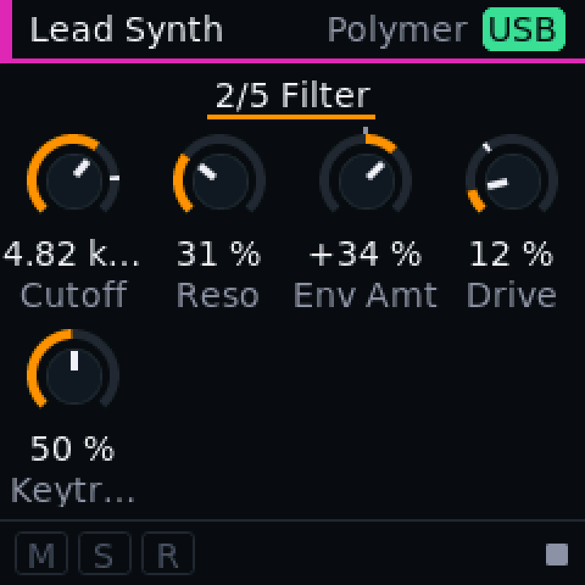
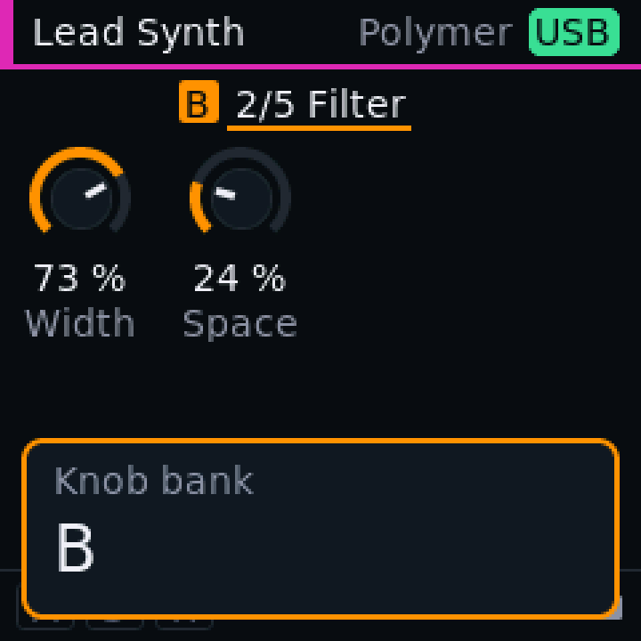

DAW manual · Bitwig · Views
8 Device view
Play a sound and shape it with the knobs, without looking at the computer. The knobs follow the device you select in Bitwig, page by page, and the screen names every knob and shows its value as Bitwig does.
Download the Bitwig PDF PDF, 0.5 MB
Getting there
The Device view is where every session starts. From another view, tap SEQ until the left of the status bar shows the device's name. SEQ is unlit in this view.
What the screen shows

- Status bar: the device's name on the left; the remote page's position and name in the middle ("2/5 Filter").
- Eight knob cells for K1-K8: name, value, arc. A tick on the arc shows where modulation has the parameter right now. A dim, empty cell has no parameter on this page; its knob does nothing.
- The selected track along the bottom: its colour bar, its name, and its M, S, R (mute, solo, arm) lit when on.
The controls
| Control | In the Device view |
|---|---|
| K1-K8 | The selected device's remote controls, the current page |
| K9-K16 (Knob Bank B) | The selected track's remote controls |
| Left / Right | Previous / next remote page |
| Oct- + Left / Right | Previous / next device in the track's chain |
| Oct- or Shift pad held while turning | Fine steps |
| Pad bank B | The device's on/off switches, when it has any (below); on a drum track the drum pads (see Drum pads and steps); otherwise tracks |
| hold SEQ | Browser: replace this device |
| Oct- + hold SEQ | Browser: insert a device after this one |
| Shift pad + Right | Steps for one key of the track (see Drum pads, steps and key lanes) |
Pads, faders and transport work as everywhere (see Controls that work in every view).
Remote controls: what the knobs reach
Bitwig gives every device remote control pages: sets of eight parameters chosen to be useful together (for Polymer: Oscillator, Filter, Envelope…). Bitwig's own devices come with pages; for plug-ins and your own devices you can make pages in the device's remote-controls panel in Bitwig. The knobs always show the page the screen names.
Track remote controls (K9-K16) are Bitwig's per-track macros (Bitwig 5 and newer): eight controls on the track itself that can each move parameters on several devices, such as "Drive" or "Width". Set them up in the track's remote-controls panel. They are the same whichever device is selected, so they make a second layer that does not change when you step through the chain.

Device pads: switches on the pads
Many devices have on/off parameters on their remote pages: a filter's bypass, a delay's sync, an oscillator's on switch. When the selected device has such switches on its current remote page or the next one, pad bank B plays them instead of the tracks:
- Top row (pads 1-8): the switches of the current page, under the knob with the same number.
- Bottom row (pads 9-16): the switches of the next page.
- A switch's pad is lit in Bitwig orange: bright = on, dim = off. Pads without a switch stay dark and do nothing.
- Tap a pad to flip the switch. Like a knob, it touches the parameter, so Bitwig can record the flip as automation.
You can tell the pads changed meaning three ways: the message Pads: Polymer switches appears once, the status bar adds | pads after the page name ("2/5 Filter | pads"), and the pads turn orange.
The Oct- and Shift pad chords on the pads still do what they do everywhere (track bank, scenes, choosing the bottom-row action). To mute or select tracks with the pads, tap SEQ to the Mixer, or pick a device without switches.
How fine is a knob?
A knob click moves a parameter by 1/128 of its range. Holding Oct- or the Shift pad makes it 1/1024 for exact settings. The script preference Knob steps → Fine (256) halves the normal step. Turning fast makes bigger jumps if Globe → Physical Controls → Knob Curve is set to the exponential curve.
When there is no device
On a track without devices the status bar reads No device and hold SEQ: browse: hold SEQ to pick one (see Browser). A device without remote pages shows no pages, and its knobs do nothing until you add a page in Bitwig.
Good to know
- Turning a knob also touches the parameter, so Bitwig can record it in Touch automation mode (see Workflows).
- Show modulation → No in the script preferences hides the modulation ticks.
- The knobs follow Bitwig's selection: click a device in Bitwig and the screen follows it.
← When the keyboard's own pages take overDrum pads, steps and key lanes →